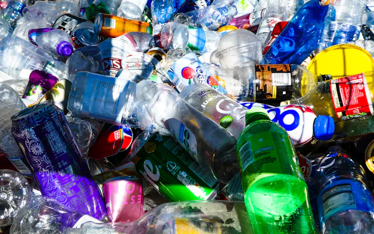
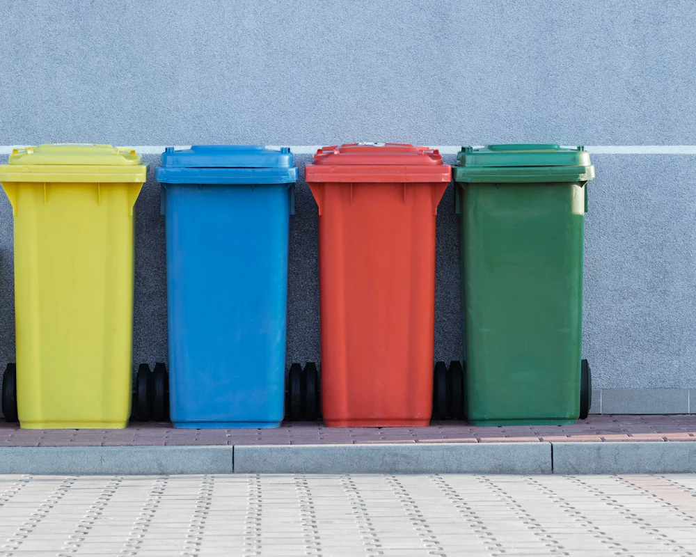
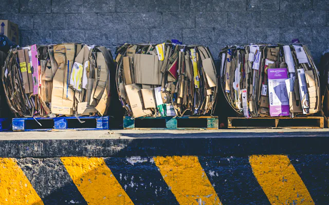
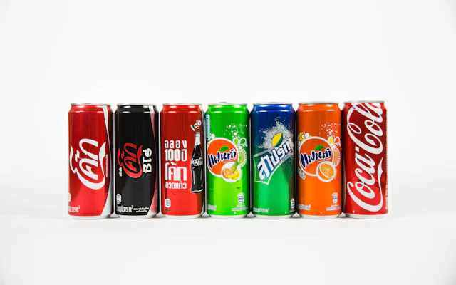
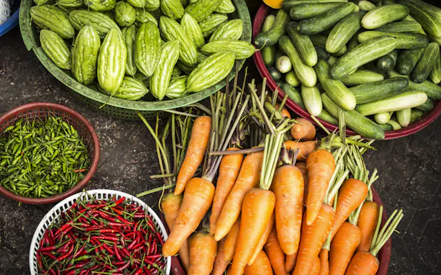
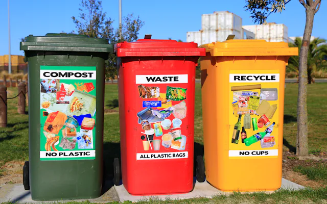

Plastic
How to sort plastic bottles, rigid containers and soft plastics.
Not sure where your waste belongs? EcoRecycle helps you quickly find the correct disposal method, understand recycling rules, and discover nearby recycling locations across Australia.

Understanding proper waste separation is the first step toward a cleaner community and less landfill contamination.
Many everyday items are hard to classify, leaving residents unsure whether to use a regular bin or a drop-off centre.
The wrong items in recycling bins can contaminate entire batches of material and send them straight to landfill.
Residents often have to search through different local government sources to find simple, reliable instructions.
Search for an item to find out how it should be disposed of.
Browse common waste streams to learn specific sorting guidelines and preparation steps.

How to sort plastic bottles, rigid containers and soft plastics.

Which paper products, newspapers and boxes can be recycled.
How to dispose of drink bottles and food jars safely.

Aluminium drink cans, steel food tins and metal foil.
Safe drop-off options for batteries, phones and appliances.

What belongs in your green FOGO bin or home compost.

What belongs in the red landfill bin and how to avoid contamination.
Search any item for an instant answer and step-by-step instructions.
Search all itemsFollow these four basic steps to make sure your recyclable items are processed successfully.
Check whether the item is accepted in your kerbside recycling bin or at a drop-off centre.
Empty all food and liquid from bottles, jars and food containers.
Rinse containers lightly where needed, so residue doesn't contaminate paper.
Place materials in the correct bin loose, without bagging them in plastic.
Find suitable recycling locations for items that can't go in your regular household recycling.
Stay up to date with your household bin schedule and never miss a collection day.
Clear, accessible recycling guidance helps people make informed disposal decisions that protect local ecosystems and conserve natural resources.